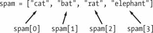
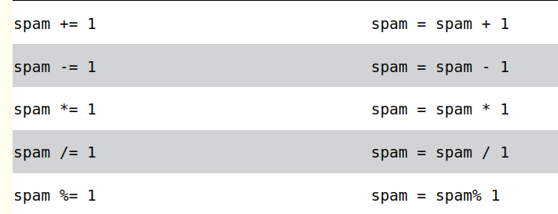

Listas#
Listas e tuplas podem conter vários valores, o que facilita a escrita de programas que lidam com grandes quantidades de dados. E como as próprias listas podem conter outras listas, você pode usá-las para organizar dados em estruturas hierárquicas.
Uma lista é um valor que contém vários valores em uma sequência ordenada.
Uma lista começa com um colchete de abertura e termina com um colchete de fechamento, [ ] . Os valores dentro da lista também são chamados de itens . Os itens são separados por vírgulas (ou seja, são delimitados por vírgulas ). Por exemplo:
[1, 2, 3]
['cat', 'bat', 'rat', 'elephant']
['hello', 3.1415, True, None, 42]
spam = ['cat', 'bat', 'rat', 'elephant']
spam

spam[0]
'Hello, ' + spam[0]
'The ' + spam[1] + ' ate the ' + spam[0] + '.'
spam[10000] #não aceita indexadores fora do limite
spam[1.0] #não aceita indexadores que não sejam inteiros
---------------------------------------------------------------------------
TypeError Traceback (most recent call last)
Cell In[13], line 1
----> 1 spam[1.0] #não aceita indexadores que não sejam inteiros
TypeError: list indices must be integers or slices, not float
spam[int(1.0)]
'bat'
spam = [['cat', 'bat'], [10, 20, 30, 40, 50]]
spam[0]
['cat', 'bat']
spam[0][1]
'bat'
spam[1][4]
50
spam = ['cat', 'bat', 'rat', 'elephant']
#indexSpam = [0, 1, 2, 3] esquerda para direita
#indexSpam = [-4, -3, -2, -1]
spam[-1]
'elephant'
'O ' + spam[-1] + 'tem medo do ' + spam[-3] + '.'
'O elephanttem medo do bat.'
'O ' + spam[3] + ' tem medo do ' + spam[1] + '.'
'O elephant tem medo do bat.'
spam[1:3]
['bat', 'rat']
spam[:2]
['cat', 'bat']
len(spam)
4
spam
['cat', 'bat', 'rat', 'elephant']
spam[1] = 'aardvark'
spam
['cat', 'aardvark', 'rat', 'elephant']
[1, 2, 3, 4] + ['A', 'B', 'C']
[1, 2, 3, 4, 'A', 'B', 'C']
['X', 'Y', 'Z'] * 3
spam = [1, 2, 3]
spam = spam + ['A', 'B', 'C']
spam
[1, 2, 3, 'A', 'B', 'C']
del spam[2]
spam
[1, 2, 'B', 'C']
Em vez de usar diversas variáveis repetitivas, você pode usar uma única variável que contenha um valor de lista.
catNames = []
while True:
print('Enter the name of cat ' + str(len(catNames) + 1) +
' (Or enter nothing to stop.):')
name = input()
if name == '':
break
catNames = catNames + [name] # list concatenation
print('The cat names are:')
for item in catNames:
print(' ' + item)
Enter the name of cat 1 (Or enter nothing to stop.):
Enter the name of cat 2 (Or enter nothing to stop.):
Enter the name of cat 3 (Or enter nothing to stop.):
Enter the name of cat 4 (Or enter nothing to stop.):
The cat names are:
miau1
miau2
miau3
https://autbor.com/allmycats2/
Uma técnica comum do Python é usar range(len( someList )) com um loop for para iterar sobre os índices de uma lista.
suprimentos = ['pens', 'staplers', 'flamethrowers', 'binders']
for i in range(len(suprimentos)):
print('Indice ' + str(i) + ' em suprimentos é: ' + suprimentos[i])
Indice 0 em suprimentos é: pens
Indice 1 em suprimentos é: staplers
Indice 2 em suprimentos é: flamethrowers
Indice 3 em suprimentos é: binders
Você pode determinar se um valor está ou não em uma lista com os operadores in e not in . Como outros operadores, in e not in são usados em expressões e conectam dois valores: um valor a procurar em uma lista e a lista onde ele pode estarencontrado. Essas expressões serão avaliadas como um valor booleano.
'howdy' in ['hello', 'hi', 'howdy', 'heyas']
True
spam = ['hello', 'hi', 'howdy', 'heyas']
'cat' in spam
False
'howdy' not in spam
False
'cat' not in spam
True
myPets = ['Zophie', 'Pooka', 'Fat-tail']
print('Enter a pet name:')
name = input()
if name not in myPets:
print('I do not have a pet named ' + name)
else:
print(name + ' is my pet.')
Enter a pet name:
Pooka is my pet.
Atribuição múltipla (tecnicamente chamado de descompactação de tupla ) é um atalho que permite atribuir múltiplas variáveis com os valores em uma lista em uma linha de código
cat = ['fat', 'gray', 'loud']
size, color, disposition = cat
size
'fat'
color
'gray'
Em vez de usar a técnica range(len( someList )) com um loop for para obter o índice inteiro dos itens na lista, você pode chamar a função enumerate() . Em cada iteração do loop, enumerate() retornará dois valores: o índice do item na lista e o item na própria lista.
suprimentos = ['canetas', 'grampeadores', 'apagadore', 'fichários']
for index, suprimento in enumerate(suprimentos):
print('Índice ' + str(index) + ' em suprimentos é: ' + suprimento)
Índice 0 em suprimentos é: canetas
Índice 1 em suprimentos é: grampeadores
Índice 2 em suprimentos é: apagadore
Índice 3 em suprimentos é: fichários
O módulo random possui algumas funções que aceitam listas de argumentos. A função random.choice() retornará um item selecionado aleatoriamente da lista.
import random
pets = ['Cachorro', 'Gato', 'Esquilo']
random.choice(pets)
'Gato'
A função random.shuffle() reordenará os itens de uma lista. Esta função modifica a lista existente, em vez de retornar uma nova lista.
people = ['Alice', 'Bob', 'Carol', 'David']
random.shuffle(people)
people
['David', 'Alice', 'Carol', 'Bob']
import random
a1 = input('Digite o nome do aluno 1: ')
a2 = input('Digite o nome do aluno 2: ')
a3 = input('Digite o nome do aluno 3: ')
a4 = input('Digite o nome do aluno 4: ')
lista = [a1, a2, a3, a4]
sorteio = random.choice(lista)
print('O aluno sorteado foi:', sorteio)
---------------------------------------------------------------------------
KeyboardInterrupt Traceback (most recent call last)
Cell In[71], line 2
1 import random
----> 2 a1 = input('Digite o nome do aluno 1: ')
3 a2 = input('Digite o nome do aluno 2: ')
4 a3 = input('Digite o nome do aluno 3: ')
File ~\AppData\Local\Packages\PythonSoftwareFoundation.Python.3.11_qbz5n2kfra8p0\LocalCache\local-packages\Python311\site-packages\ipykernel\kernelbase.py:1202, in Kernel.raw_input(self, prompt)
1200 msg = "raw_input was called, but this frontend does not support input requests."
1201 raise StdinNotImplementedError(msg)
-> 1202 return self._input_request(
1203 str(prompt),
1204 self._parent_ident["shell"],
1205 self.get_parent("shell"),
1206 password=False,
1207 )
File ~\AppData\Local\Packages\PythonSoftwareFoundation.Python.3.11_qbz5n2kfra8p0\LocalCache\local-packages\Python311\site-packages\ipykernel\kernelbase.py:1245, in Kernel._input_request(self, prompt, ident, parent, password)
1242 except KeyboardInterrupt:
1243 # re-raise KeyboardInterrupt, to truncate traceback
1244 msg = "Interrupted by user"
-> 1245 raise KeyboardInterrupt(msg) from None
1246 except Exception:
1247 self.log.warning("Invalid Message:", exc_info=True)
KeyboardInterrupt: Interrupted by user
from random import choice
nome1 = str(input('Digite o primeiro nome: '))
nome2 = str(input('Digite o segundo nome: '))
nome3 = str(input('Digite o terceiro nome: '))
nome4 = str(input('Digite o quarto nome: '))
lista = [nome1,nome2,nome3,nome4]
escolha = choice(lista)
print('O nome escolhido foi {} '.format(escolha))
O nome escolhido foi paulo
import random
grupos = []
grupo = input('Insira um grupo: ')
grupos.append(grupo)
while grupo:
grupo = input('Insira um grupo: ')
grupos.append(grupo)
random.shuffle(grupos)
print(grupos)
['grupo2', 'grupo3', '', 'gupo1']
Operadores de Atribuição#

spam = 42
spam = spam + 1
spam
43
spam = 42
spam += 1
spam
43
spam = 'Olá,'
spam += 'mundo!'
spam
'Olá,mundo!'
EXCEÇÕES ÀS REGRAS DE INDENTAÇÃO EM PYTHON
Listas podem abranger várias linhas no arquivo de código-fonte. O recuo destas linhas não importa; Python sabe que a lista não está terminada até que veja o colchete final.
spam = ['maçãs',
'laranjas',
'bananas',
'gatos']
print(spam)
['maçãs', 'laranjas', 'bananas', 'gatos']